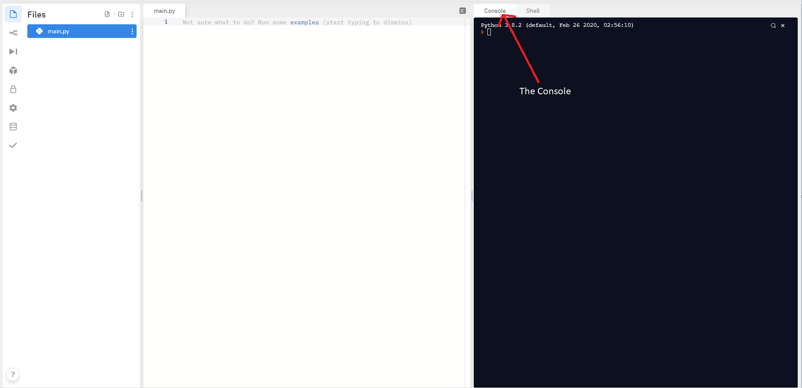
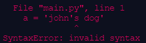

Return STEM;
Introduction to Python
The Console
Console Output
Console Input
String Manipulation
Indices and Strings
String Formatting
Escape Characters
Methods
Vocabulary
Python Concepts
Console I/O
This guide is still under development. We'll be overhauling the Introduction to Python content in the next few months. Stay tuned for more changes and better tutorials!
~ The Return STEM team
The Console
The console is a place where the user can input information for a program to receive, and view the outputs of that program. You can find it on repl here:

Console Output
You've already learned the function to output text to the console, print(). print() can output various different data types, including strings and integers. Additionally, you can print() variables, which will display their contents.
print("Hello World")
>>> Hello World
x = "Hello"
print(x)
>>> Hello
# Here, we use 9 and 10, which are integers
print(9 + 10)
>>> 19
# Here, we use "9" and "10", which are strings
print("9" + "10")
>>> 910
Using print()
The print() function accepts a string (a data type you learned in the last lesson).
Strings are a data type that can be used to represent sentences or words and are surrounded with "".
Strings look like this:
"Hello, World"
"Spam and Eggs"
"Dog"
Basically, you can put whatever you want to print inside of the "" to make it a string, then put that inside print() to print whatever you want.
name = "Jack"
print("My name is", name)
>>> My name is Jack
print("Hello World")
>>> Hello World
print(Hello World)
>>> Error
Notice that in the last example, Python raised an error. This is because we excluded quotes around the text. Python doesn't recognize this as a string, and instead tries to find a variable called Hello. However, because there is no such variable declared, it raises an error instead.
Triple Quotes
Triple quotes can be used to easily represent strings over multiple lines. Notice that for triple quotes, you don't need to use \n for new lines.
Normally, when using triple quotes, you use three double quotes rather than single quotes.
To ignore the automatic new line, you can use the \ character:
long_str = """This is a string with triple quotes. As you can see, even though there are no newline characters,
It still displays newlines.
You can \
ignore new lines with the \\ character. """
print(long_str)
>>> This is a string with triple quotes.
As you can see, even though there are no newline characters,
It still displays newlines.
You can ignore newlines with the \ character.
On line 4 of the output, note that we use \ to ignore the auto new line. This can be used if we want a line break in our code, but not in our output.
Long Comments (Using Triple Quotes)
When triple-quoted strings are used on their own, Python ignores them. This performs a similar function to comments, which is one use of them:
""" When this literal is by itself, it is also ignored by python.
This can be used to create multi-line comments.
You can use these comments to include information on
Your name, the purpose of the program, the prompt of the program if it was given, or how to use the program. """
Even though you could use # over multiple lines, this way of commenting is more aesthetically appealing.
It’s your turn
Using repl.it, write a short program that tells the user your name, and one fact about yourself using the print() function.
For example, your program might display:
My name is Jason and my favorite color is orange.
Console Input
You can use input() to prompt the user for input, which can then be submitted by pressing ENTER or RETURN.
x = input()
print(x)
>>> yo <- (my input)
>>> yo
x = input("What is your name? ")
print(x)
>>> What is your name? Joe <- (my input)
>>> Joe
text = "What is your name "
x = input(text)
print(x)
>>> What is your name Joe <- (my input)
>>> Joe
However, remember that the input must be stored inside of a variable. Python won't do anything with the data inputted if it isn't stored somewhere.
# Nothing gets outputted because there is no print function
x = input()
>>> Hello <- (my input)
# Nothing can be done with this input because it is not assigned to a variable
input()
>>> Hello <- (my input)
Using input()
The syntax for input() looks like this:
var_name = input("Prompt text")
This causes the program to ask for the user’s input, and then store it in the variable my_var.
Just like print, if you add a string inside of input(), it will print it out.
You can use this feature to ask questions inside input:
my_var = input()
x = input()
print(x)
>>> yo <- (my input)
>>> yo
x = input("What is your name?")
print(x)
>>> What is your name? Joe <- (my input)
>>> Joe
text = "What is your name"
x = input(text)
print(x)
>>> What is your name? Joe <- (my input)
>>> Joe
Remember that the option to add a prompt to input() is optional. Therefore, if you don't want a prompt, you can simply leave input() with nothing inside the parenthesis.
Using input() will always store a string into the variable
If you want to input a different data type, you will need to cast (change its data type) it.
For example, if you want to store someone’s age as an integer:
age = int(input())
If you want to store a percent, you can cast the input as a float:
percent_positive = float(input())
This is a similar effect to
age = input()
age = int(age)
However, it is shorter and easier to read.
String Manipulation
Sometimes, we need to add strings together to make them more useful. You can use + to concatenate (add) strings together. This joins them end-to-end, which just means that it will add the beginning of the second string to the end of the first string.
When you concatenate strings, remember that + can perform different functions depending on the input: it will concatenate strings, but add numbers. When you try to concatenate a number to a string, Python will raise an error, since it doesn't know what to do.
Therefore, to concatenate different data types, you can cast them into strings using str().
print("cater" + "pillar")
>>> caterpillar
print("I am" + 7 + 8)
>>> TypeError: can only concatenate str (not "int") to str
print(7 + 8 + " I am")
>>> TypeError: unsupported operand type(s) for +: 'int' and 'str'
Variables can also be used in string manipulation, and you can assign them to variables as well. For example,
first_word = "Hello "
second_word = "World"
third_word = first_word + second_word
print(third_word)
>>> Hello World
Finally, you can also use the * (multiply) symbol on strings to repeat them multiple times:
repeated = "hello" * 5
print(repeated)
>>> hellohellohellohellohello
Challenge: Print hello five times on the same line with spaces in between
hello hello hello hello hello
Indices and Strings
Strings are sequences of characters (single numbers, letters, symbols). Each character has its own index number, which tells us the character's position.
"Hello sky!"
^^^^^^^^^^
||||||||||
0123456789
The first character has an index of 0, the next one is 1, then 2, etc.
This system is called zero-indexing. Normally, we count starting from 1. However, most programming languages count starting with 0.
You can access a single characters from a string by selecting its index
string[index_number]
my_string = "Hello sky!"
print(my_string[6])
print(my_string[4])
>>> s
>>> o
You can also access multiple characters from a string, or create a substring , which is a slice, or part of a string. The syntax looks like this:
string[start(inclusive):end(exclusive)]
If you leave the start index blank, Python assumes it is zero. If you leave the end index blank, Python assumes it to be at the end of the string.
my_string = "Hello World"
print(my_string[1:7])
>>> ello W
print(my_string[3:])
>>> lo World
print(my_string[:8])
>>> Hello Wo
It’s your turn
Using repl.it, write a short program that asks for:
- The user’s name
- Their favorite color
- What grade they are in
The program should look like this, after the user inputs some information:
What is your name? Jason
What is your favorite color? Orange
What grade are you in? 11th
Jason is in 11th grade and their favorite color is Orange.
String Formatting
f-strings
In the prompt before, you’ll notice that it was a lot of work to format the strings to print out variables.Thankfully, you can use f-strings:
f-strings are declared just like normal strings, but have an f in front. When you want to use a variable, use the {} symbols, called curly braces, and put the variable name inside.
name = "Joe"
print("His name is " + name) # No f-string
>>> His name is Joe
print("His name is", name) # No f-string
>>> His name is Joe
print(f"His name is {name}") # Using f-string
>>> His name is Joe
num1 = 10
num2 = 6
num1_string = "10"
num2_string = "6"
print(f"The sum is {num1 + num2}")
>>> The sum is 16
print(f"The sum is {num1_string + num2_string}")
>>> The sum is 106
print(f"The sum is {int(num1_string) + int(num2_string)}")
>>> The sum is 16
.format()
On the previous slide, you used f-strings to fill variables into the curly braces.
Here, you will use the .format() method to a similar effect.
Strings with .format() have {} placed in the same locations as they would be in an f-string. However, these do not need to be filled. If filled, they must be filled with previously undeclared variables, and those variables can be defined inside the parentheses of the format method.
name = "Joe"
print(f"His name is {name}") # Using f-string
>>> His name is Joe
print("His name is {}".format(name) # Using .format()
>>> His name is Joe
print("His name is {putName}".format(putName=name) # Using .format() with variable names
>>> His name is Joe
%s
On the previous slide, you used .format() to fill variables into curly braces.
Here, you will use %s to fill variables into a string.
The syntax of %s is similar to .format()
When you put multiple %s, you can fill multiple variables into a string.
name = "Joe"
print("His name is {}".format(name)) <- Using .format()
>>> His name is Joe
print("His name is %s" % name) <- Using %s
>>> His name is Joe
Escape Characters
How do I get ' in my string?
You might have noticed that when we use print() to display something, we always tell you to use quotes.
How do you get the ' in the string?
Notice this:

If you were originally using single quotes at the start and end, you should switch to double quotes to avoid this issue.
If you plan to use both single and double quotes inside your string, you can use something called an escape character . In Python, the \ (backslash) character signals to the computer that the next character is a character, and not related to the syntax.
There are also other escape characters using the \ key:
| Escape character | Function | Example |
|---|---|---|
\n | Starts a new line | print("Hello\nWorld") > Hello > World |
\b | Backspace | print("Hello \bWorld") > HelloWorld |
\t | Works like a tab | print("Hello\tWorld") > Hello World |
\\ | Acts as a regular backslash | print("Ok\\") > Ok\ |
\' | Acts as a regular single quote (apostrophe) | print('Rob\'s World') > Rob’s World |
\" | Acts as a regular double quote | print("He said \"try to\"") > He said "try to" |
Methods
The print() and input() functions we've gone over are called builtin functions
They are called (told to run) in this format:
print(args)
args mean function arguments , things you put inside the parenthesis.
However, there are other functions, called methods, that are directly applied to what we call them from. We call them with a trailing period and the function name, then parenthesis
x.lower()
String Methods
Strings have many methods that can be called to manipulate (change) them
Example: x.lower() returns a lowercase version of the string stored inside x
Most string methods will return a copy of the string, so make sure to assign the result to another variable
x = "My sTrIng"
y = x.lower()
print(x)
>>> My sTrIng
print(y)
>>> my string
a = "capslock"
a = a.upper()
print(a)
>>> CAPSLOCK
| Method | Description | Example |
|---|---|---|
| .upper() .lower() | Converts a string to uppercase or lowercase | x = "Hello World" print(x.upper()) print(x.lower()) >>> HELLO WORLD >>> hello world |
| .replace(original phrase, new phrase) | Replaces the original phrase in a string with a new phrase | x = "Hello World" print(x.replace("World", "People")) >>> Hello People |
| .capitalize() | Capitalizes the first letter of the string | x = "hello, friend." print(x.capitalize()) >>> Hello, friend. |
| .isdigit() | Returns a boolean that signifies whether all characters in the string are digits (0 to 9) | x = "1000" print(x.isdigit()) >>> True |
| .startswith(other: str) .endswith(other: str) | Returns a boolean that signifies whether the string starts/ends with other | x = "The brown fox" print(x.startswith("Th") >>> True |
| .count(other: str) | Returns the amount of times other appears in the string | x = "an armadillo jumped on an ice cube" print(x.count("an")) >>> 2 |
| len(string) Note: This is a conventional function, not a method | Returns the length, or the total number of characters, of a string | x = "returnSTEM;" print(len(x)) >>> 11 |
Vocabulary
| Word | Definition |
|---|---|
| Console | A location where the user can input commands (by typing into it) and view outputs |
| Console Output | The process of outputting something to the console |
| Console Input | The process of the user inputting something into the console |
| Concatenate | To add strings together |
| Methods | Functions that belong to a piece of data that perform operations on that data |
Python Concepts
| Word | Definition |
|---|---|
| print() | Displays whatever is inside the parenthesis on the console |
| input() input(prompt: str) | Requests a user input and returns a string containing that input. Optionally prints a prompt to the console. |
| """ Triple Double quotes """ | Lets us create multi-line strings. Can also be used for multiline comments. |
| f-strings | Formatted strings. They make it easier to format and organize output. |
| Escape Characters | Characters that let us add certain elements to strings (tab, quotes, slash) that could not be added otherwise. |